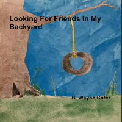

Wayne Cater
News
Well it's official! My first children's book, Looking For Friends In My Backyard, is available! This is a small children's book about a little boy exploring his own backyard. I wrote and illustrated this with my grandsons in mind. The illustrations were taken from my watercolor work.
 If perhaps you have already purchased and received your copy, I'd love to hear what you honestly think about it. Please take time to post a review on Amazon. Thank you!
I was recently approached about reading my book to children at some area schools. With that in mind, I created some coloring sheets to share with the teachers and students. Here's a link to one you can download, print, and give to your child. I hope you like it! (The format is PDF.)
Music
About
I am Billy Wayne Cater. My friends call me Wayne!
I am a songwriter, but isn’t everyone in Nashville? I play guitar and tinker with other instruments -- piano / keyboard, and bass guitar. I am an ASCAP member. You can find some of my music work on Apple Music, Amazon Music, Spotify, and others.
 I've got a day job too! I’ve been a software developer for 25 years.
The technologies I use these days are C#.Net, SQL Server, ASP .Net Core (API), and Angular.
I've got a day job too! I’ve been a software developer for 25 years.
The technologies I use these days are C#.Net, SQL Server, ASP .Net Core (API), and Angular.
Around 2013, I started sketching and drawing caricatures of coworkers. One thing leads to another and I found that I enjoyed sketching landscapes, and painting watercolors. Checkout some of my art!
Finally, I am excited to share my first children's book, Looking For Friends In My Backyard . I wrote and illustrated it for my grandsons, but I am happy to share it with you and your little ones. You can order your copy on Amazon.
--Wayne
Social